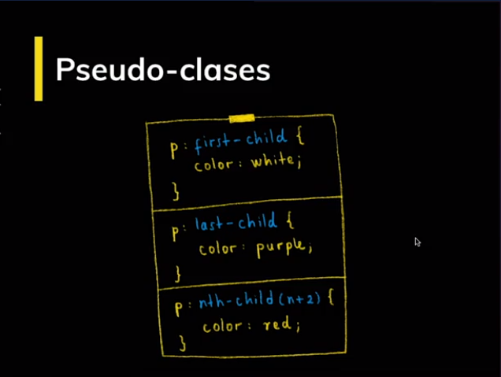

Internet: Es la combinación de las palabras Interconnected + Network.
HTTP: Hyper Text Transfer Protocol, permite la comunicación entre dispositivos.
URL: Uniform Resource Locator (Localizador de recursos uniformes), más conocido como la dirección de un sitio web, es la manera que agregamos un punto a la red.
HTML: Hyper Text Markup Language (Lenguaje de marcado de hiper texto), da la estructura a un sitio web.
CSS: reglas que establecen la apariencia de una web, para pantallas grandes y pequeñas (Responsive Design). Apareció en 1994.
Lenguaje de marcado, nos permite estructurar nuestro sitio web. Tenemos varios elementos llamados etiquetas y nos periten construir varios elementos en nuestro sitio como botones, barras de búsquedas, menús, etc. Un sitio para saber las etiquetas es htmlreference.io
Es un lenguaje que permite crar páginas web con un diseño agradable para los usuarios. Es decir, podemos colocar colores, cambiar la fuente en tamaños y estilos. Un sitio para saber más de CSS es cssreference.io
Document Object Model, al escribir el código en HTML el navegador requiere del DOM para poder interpretrar las etiquetas y los transforma en objetos que pinta, por ejemplo, este mismo texto es una etiqueta p.
Al igual que el DOM, interptreta las etiquetas y las transforma en objetos, pero en este caso del CSS.
Un árbol que une el DOM y CCSOM para renderizarlos, creando un código que pueda interpretar el navegador. El navegador hace unos pasos fundamentales para hacer la transformación:
En la siguiente imagen podemos ver el árbol con el CCSOM, donde los estilos están vinculados a cada objeto del DOM:

Es por ello es muy importante tener en cuenta el CSS que colocamos en nuestros sitios webs, para evitar las demoras de carga de un sitio web.

Veamos la siguiente imagen

Esta es una etiqueta h1, la cual es de un encabezado. Esta página web consta de varias etiquetas de encabezado. Hay diferentes tipos de encabezado siendo de mayor a menor: h1, h2, h3, h4, h5 y h6.
Un elemento HTML, está compuesto por una etiqueta de apertura, esta etiqueta debe de tener un nombre específico, en nuestro ejemplo "h1", y debe de estar entre los signos "< >", luego sigue el contenido, que es lo que quieres escribir, y finalmente va una etoqueta de cierre, es que similar a la etiqueta de apertura, pero lleva "/".
El elemento HTML sería todo, es decir la etiqueta de apertura, el contenido y la etiqueta de cierre

En la imagen, vemos un atributo llamado class, este tipo de atributo le podemos poner un tipo de identificador, en el ejemplo de la imagen, sería "saludo". Los atributo son palabras especiales que se utilizan para configurar un elemento, estos atributos siempre van a ir en la etiqueta de apertura.
Es fundamental, debido a que es la base para poder realizar buenos renderizados de nuestros sitios webs. Según podemos entender como anidamiento, es la existencia de un elemento que se encuentra en otro, por ejemplo el caso de un elemento li que vive dentro del elemento ol, o los casos de elementos div, que se encuentran dentro de otro div.
Son elementos que no pueden tener elementos anidados. tenemos el ejemplo de img como el más conocido, pero hay otros como area, base, br, col, entre otros.
Nos permite que el documento sea analizado de la misma manera en los diferentes navegadores
Es la etiqueta principal, es conocida como root element
No tiene una implicación visual, pero es importante donde se tiene la codificación de caracteres, así como también etiquetas metas. También se tiene la etiqueta title, donde aparecerá en el título de la pestaña del sitio web.
Acá es donde colocaremos la estructura del sitio web, el esqueleto. Si queremos ponerle estilos para que se aprecie mejor el sitio web, coloquemos una etiqueta "style". Recuerda visitar el sitio htmlreference.io para conocer más etiquetas.
Es importante, ya que debe de tener un sentido. es decir, darle sentido y estructura. Es momento de evitar el "divitis" (Uso desmesurado de la etoqueta div).
¿Por qué es importante? Si tenemos usuarios con discapacidad visual, ellos pueden leer bien nuestro sitio web si es que tenemos una buena semántica, como saber qué elemento es un titulo, una imagen, un párrafo, etc. Es decir, brinda accesibilidad a nuestro sitio web.
En el día a día, nos encontraremos con varios errores.
HTML es un lenguaje interpretado, el navegador interpreta el HTML y de alguna manera permite los errores.
Si tenemos poco código no hay problema, pero si es todo un sistema web, tenemos un sistema de validación https://validator.w3.org/
Leer los errores y corregirlos.
Si queremos configurar la visualización del un sitio web, podemos aplicar CCS para darle estilos, formatos, centrar el texto, etc. Esto lo hacemos de la siguiente manera.
Donde:
*: Es el seletor universal, se aplicarn a todos los elementos de nuestro html.
Tipo: Son selectores que se aplican a cierto elemento HTML en específico, las propiedades se aplicarán a todas las etiquetas del HTML que hemos declarado.
Clase: Si nuestras clases tienen un atreibuto de class, podemos usar ese valor para que los cambios sólo afecten a los que contienen este atributo.
id: Es similar a la clase, pero es aplicado sólo a ese elemento.
Es una palabra clave agregada a un selector para especificar un estado especial de los elementos seleccionados, es decir nos darán estilos específicos. Para más información de las pseudoclases puedes visitar el sitio de desarrollo de mozilla
Un pseudo-elemento en CSS es una palabra clave agregada al selector para le des un estilo específico. En comparación con las pseudo-clases, estas modifican un estado (como el hover de un botón), mientras que los pseudo-elementos sólo el estilo del elemento. Nececistamos siempre los dos puntos para poder utilizar los pseudoelementos. Para más información de las pseudoclases puedes visitar el sitio de desarrollo de mozilla
Todos los elementos tienen un modelo de caja, este modelo de caja está compuesto por cuatro elementos:
Puedes ver un ejemplo aqui
Medidas absolutas: son medidas que tienen una unidad estándar, no dependen de otros elementos para obtener un valor, como es el caso de los píxeles, centímetros entre otros como:
Medidas relativas: dependen de una medida o de un elemento para que tenga un valor, como es el caso de porcentaje entre otros como:
Puedes ver un ejemplo aqui
Todos los elementos tienen un comportamiento que se define a través de la propiedad display. Esta propiedad especifica la jerarquía de mostrar un elemento:
Si quieres practicar más de Flexbox pueds ingresar aquí. o aquí
Si quieres aprender más de grid puedes ingresar aquí
width: Define el ancho de un elemento. Por ejemplo: "width: 20px".
height: Define el alto de un elemento. Por ejemplo: "height: 20px".
background: Puede definir el color de fondo o la url de fondo de un elemento. Por ejemplo: "background: url(';puppy.png';);".
background-color: Define el color de fondo de un elemento. Por ejemplo: "background-color: red;".
color: Define el color de nuestros textos. Estos colores los podemos escribir de 3 formas en CSS:
border: Define el tamaño, estilo y color del borde de un elemento. Por ejemplo: "border: 2px solid yellow;".
border-radius: Define el nivel de curvatura del borde que quieres en un elemento. Por ejemplo: "border-radius: 20px;".
margin: Define el margen de un elemento. Por ejemplo: "margin: 2px;" (tendrá margen de 2px en todos sus lados). Esta propiedad tiene sus derivados como margin-top, margin bottom, margin-left y margin-right.
font-size: Define el tamaño de la fuente. Por ejemplo: "font-size: 20px;".
font-family: Define el tipo de fuente del texto de tu elemento. Por ejemplo: "font-family: 'Roboto';".
opacity: Determina la transparencia del elemento entre los valores 0 (transparente) y 1 (opaco).
outline: Un término algo desconocido es el esquema HTML. Un esquema es una línea que se dibuja alrededor de los elementos que hace que se "destaquen", siendo más común en los inputs y buttons.
box-sizing: Cuando trabajamos con paddings, por ejemplo, veremos que el tamaño de nuestro elemento crece. Lo que hace box-sizing es fijar el tamaño del elemento y que este incluya el padding que tenga asignado.
transition: Las transiciones CSS le permiten cambiar los valores de las propiedades durante un tiempo determinado.
animation: Esta propiedad permite que animemos nuestros elementos.